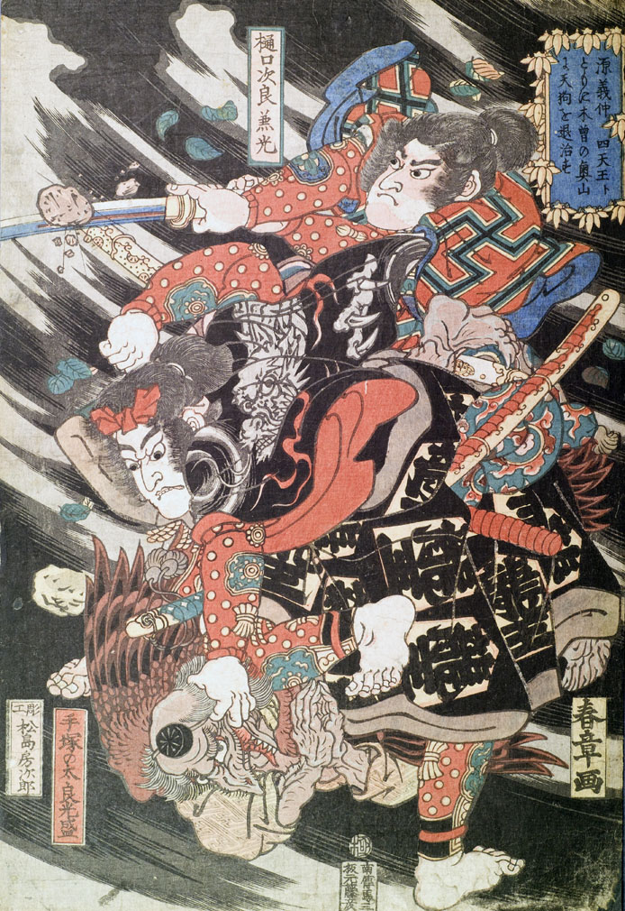

手塚の太良光盛に退治される天狗。嘴と翼があり、禿げた頭に頭襟をつけている。光盛は指を天狗の口に引っ掛け、組み付している。天狗は手を合わせ許しを乞うているようにみえる。光盛の羽織の柄に龍がみえる。
著作者：春章／出典：親書誌：U426_nichibunken_0143：源義仲四天王トともに木曽の奥山に天狗を退治す；ミナモトノヨシナカシテンノウトトモニキソノオクヤマニテングヲタイジス／日付：2009／資源識別子：U426_nichibunken_0143_0001_0000
Copyright (c)2010- International Research Center for Japanese Studies, Kyoto, Japan. All rights reserved.